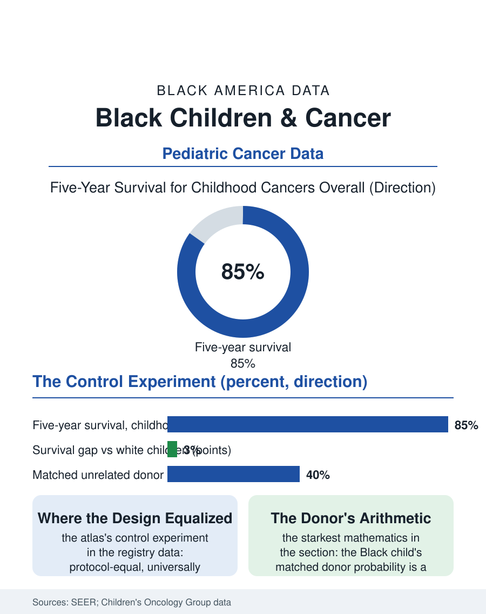

Black Public Health
The Control Experiment: Black Children and Cancer
Protocol-equal care produced the section's narrowest gaps, the control experiment for the whole atlas, with the donor registry its starkest residue. The childhood cancer file.

Childhood cancer is where American medicine's equity record is best and still unfinished: the survival revolution of the cooperative trials carried five-year survival past eighty percent for the common childhood cancers, Black children share in that revolution at rates close to the white figure, and the remaining gaps, in the rarer cancers, the relapse's salvage, and the survivorship's decades, are this file's subject. This article reads the childhood cancer file.
The Cooperative Triumph
The system's structure is the file's pride and its explanation: childhood cancer care in America runs substantially through the cooperative group, the children's hospitals' consortium whose protocols enroll the great majority of the nation's young patients, so that the child in Memphis and the child in Boston receive substantially the same regimen on the same trial, a delivery architecture the adult oncology file cannot match, and whose demographic result the registry data record, the Black child's survival approaching the white child's for the leukemias and the common solid tumors to within the narrowest margins in this entire section. The enrollment equity is the mechanism's proof in the trials file's terms: the trial is the standard of care's vehicle, the enrollment is near-universal, and the outcomes converge accordingly, the file standing in this atlas as the demonstration that the cascade's gaps are design choices, since where the design equalized, the outcomes followed. The diagnosis file retains its interval: the rare cancer's recognition, the bone pain's attribution, the abdominal mass's discovery, takes its time through the access file's routes, and the stage at the common cancers' presentation shows the modest residue the primary care file owns. The schooling file inside the treatment year is the children's system's own: the hospital school and the re-entry protocol, the class told and the workload paced, decide whether the cured child returns to her cohort or to a grade below it, an outcome the families rank with the survival itself and the survivorship data track as the education's own late effect.
Where the Gap Persists
The surviving gaps locate themselves precisely: the rarer and higher-risk diseases, where the protocol's edge is thinner and the experimental options scarcer; the relapse, whose salvage regimens and transplant and cellular therapies distribute through the referral and authorization files in the adult pattern; and the stem cell donor file, whose registry mathematics are the section's starkest, the Black child's probability of a matched unrelated donor running at a fraction of the white child's, a function of the registry's composition and the population's genetic diversity, against which the cord blood and haploidentical techniques of the current era are the engineering answer the transplant centers now deploy. The financial file is the family's: the childhood cancer's treatment year consumes the parent's employment in the pattern the caregiving file describes, and the charitable infrastructure of the children's hospital world, the housing and the funds of its famous charities, cushions the Black family's fall at the rates its own audits publish. The late effects file is the survivorship's: the cured child's decades carry the treatment's cardiovascular, fertility, and second-cancer ledger, and the survivorship clinic's follow-up, the adult file's least reliable appointment, distributes the monitoring by the access map as the survivors age out of the children's system that saved them.
The Demonstration
The childhood cancer file closes on its demonstration value, because the file is the atlas's control experiment: a delivery system designed for protocol equality, financed substantially without regard to the family's means at the point of care, enrolled universally in the evidence's production, produced the section's narrowest outcome gaps as a matter of course, which converts every other file's gap from a fact of nature into a description of a design not chosen. The demonstration's limits are the file's honesty: rare diseases, relapses, donors, and decades still stratify, and the children's system's own equity audits publish the residue without flinching. The registries count the cases in the thousands of children each year, the survival past eighty percent and the Black figure near it. The file's last entry is the protocol's binder at the children's hospital's nursing station, the same pages in every consortium city, open to the page the child's weight and count prescribe, the system having decided, for this one disease class, that the child in the safety-net city gets the regimen the research city wrote, and the outcomes, in the data's plainest reading, having believed it.
More in Black Public Health
Hypertension Among Black Adults: Prevalence, Control, and Consequences
About 55 percent of Black adults have hypertension — the highest rate of any U.S. group. Prevalence, onset, control, and the stroke, heart, and kidney consequences in the data.
Diabetes Among Black Adults: Prevalence and Complications
Nearly one in five Black adults has diabetes, diagnosed or undiagnosed — and its complications fall with particular weight. The CDC data on prevalence, control, and outcomes.
Black Life Expectancy: The Gap at Birth and Its Causes
Black life expectancy at birth is about 73 years, roughly five years below the national figure — the summary measure of every health gap in this section. The CDC data.
Source: National Cancer Institute SEER program; Children's Oncology Group trial and outcome data; National Marrow Donor Program match probability data.